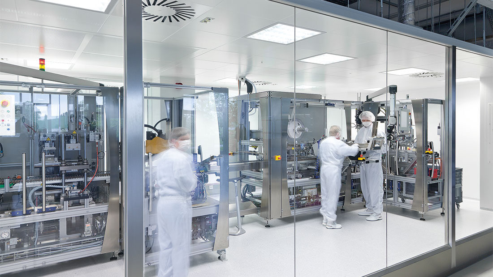
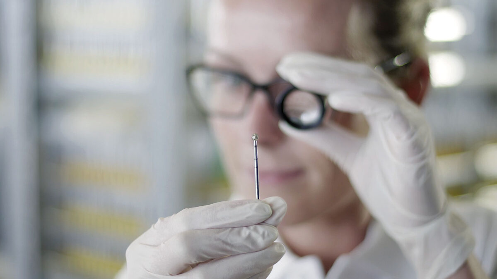

Über Brasseler.
Willkommen in unserer Welt.
Brasseler stellt international anerkannte medizintechnische Produkte her. Unter dem Markennamen Komet produzieren und vertreiben wir Instrumente für die Dentalbranche, die Chirurgie und die Schmuckindustrie. Präzise, hochwertige Instrumente in höchster Qualität.
Unsere Innovationen aus der eigenen Forschung und Entwicklung setzen seit unserer Gründung immer wieder Maßstäbe.
Brasseler beschäftigt heute in Lemgo rund 1500 Menschen, weltweit sind es 1400. Wir liefern unsere Produkte in über 100 Länder. In Frankreich, Italien, Großbritannien, Österreich und den USA sind wir mit eigenen Vertriebsgesellschaften vertreten.

Brasseler und die Marke Komet.
Unsere Marke Komet steht für das weltweit größte Herstellerlieferprogramm rotierender Instrumente und Systeme. Die Komet-Produkte werden über die drei Geschäftsbereiche Dental, Medical und Jewellery vertrieben.
Im Bereich Komet Dental werden Instrumente und Systeme für Zahnmedizin und Zahntechnik entwickelt, produziert und vertrieben.
Komet Medical steht für die Entwicklung und Fertigung chirurgischer Instrumente und Produkte für die dentale Implantologie als Auftragsentwicklungs- und Fertigungsorganisation (CDMO).
Komet Jewellery bietet Instrumente, z. B. Bohrer und Fräser, die von der Schmuckindustrie geschätzt werden.
Hier finden Sie weitere Informationen zu unseren drei Geschäftsbereichen!
In der Dentalbranche wurde Brasseler mit rotierenden Instrumenten der Marke Komet zur Branchengröße, seit vielen Jahren gilt die Marke aber auch als Innovationstreiber auf allen relevanten zahnmedizinischen Feldern, zum Beispiel in der Endodontie. Viele unserer Erfindungen setzten und setzen Maßstäbe in der Branche.
Die Bereiche Medical und Jewellery sind deutlich jünger als der Geschäftsbereich Dental, aber ebenso erfolgreich. In ihren jeweiligen Branchen gehören sie zu den internationalen Topmarken.
Brasseler setzt Maßstäbe nicht nur mit seinen Produkten, sondern auch mit seiner Produktionstechnik. Viele Maschinen werden im eigenen Hause entwickelt und gebaut, so dass die eingesetzten Produktionsverfahren den Marktstandards weit voraus sind.
Weltweit einmalig ist die Konzentration verschiedener Geschäftsbereiche unter einem Dach. Das gebündelte Know-how und der Wissenstransfer der verschiedenen Disziplinen sind zwei der vielen der Gründe für den hohen Qualitätsstandard bei Brasseler.

Die Medizintechnik stellt höchste und komplexe Ansprüche an Hersteller, ebenso die Garantie der Patientensicherheit. Brasseler wird beidem im höchsten Maße gerecht und investiert immer wieder in entsprechende Technik. Wie zum Beispiel dem eigenen Reinraum, in dem Komet-Instrumente steril verpackt werden.
Wer einmal mit Komet-Produkten gearbeitet hat, weiß noch etwas zu schätzen: Die typische Zuverlässigkeit. Und jedes Produkt, egal, von wo aus Sie bestellen, wird max. innerhalb von 48 Stunden geliefert.
Unser
Management.
Unsere
Werte.
Unsere
Verantwortung.
Häufige Fragen
Was stellt Gebr. Brasseler her?
Rotierende und oszillierende Instrumente sowie Systeme für die Zahnmedizin, die Chirurgie und die Schmuckindustrie, vertrieben unter der Marke Komet in über 100 Ländern.
Wem gehört Brasseler?
Brasseler ist seit der Gründung 1923 ein Familienunternehmen in Familienbesitz, heute in der dritten Generation.
Wie groß ist Brasseler?
Rund 1.500 Mitarbeitende weltweit, davon rund 1.200 am Firmensitz und einzigen Produktionsstandort in Lemgo, mit rund 30.000 Verkaufsartikeln.
Welche Geschäftsbereiche hat Brasseler?
Komet Dental für Zahnärzte, Zahntechniker und Kieferchirurgen, Komet Medical als Auftragsentwickler und -fertiger für Chirurgie und Implantologie sowie Komet Jewellery für die Schmuckindustrie.